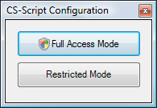

CS-Script can work on any OS as long as it has .NET
installed. This is the nature of the managed code execution under
CLR. The .NET assemblies (C# script exists in a form of assembly
during the execution) are generally neutral with respect to the OS
they are running on. This is why all versions of CS-Script
can virtually run on any OS. However in case of Vista/Win7 the
default CS-Script functionality is not sufficient to support x64 and
UAC
execution scenarios.
Version 2.0 and all subsequent versions of CS-Script are able to handle
such scenarios.
x64 specific scenarios
Under x64 CLR all loaded assemblies (including scripts being executed)
belong to the x64 execution context. It means that such script can not
access/load x32 resources directly. Here is an example that
illustrates this:
[DllImport("aspell-15.dll")]
internal static extern IntPtr new_aspell_config();
...
IntPtr config = new_aspell_config(); |
The code above will produce "
An
attempt was made to load a program with an incorrect format."
error if executed on x64 OS. The reason for this error is that
aspell-15.dll
is a x32 binary and x64 CLR just can not load it. Note this problem is
common for any managed code execution not only for C# scripts.
Usually .NET assembly is indifferent with respect to the CPU type. It
always accepts the CPU type of the operating system. This is the reason
why the code above will always fail on WinXP-64 and will always work on
WinXP-32. So what can you do to overcome the problem? Well, it is not
possible to execute the above script on Vista/Win7,
however it is
possible to compile it into an executable for the specific CPU type
(x32)
and run that executable instead of running the script. Thus,
if the
script name is
aspell.cs you
can compile it into the x32 executable in the following way:
cscs /e
/co:/platform:x86 aspell.cs
UAC scenarios
An important part of UAC is Process
Elevation. Any
process, which requires assessing the privileged resources
(e.g. LM registry) has to be started within the Administrator
account
context. Note: even if the current user belongs to the
Administrators user group, process elevation still needs to occur.
Another important thing is that a given process cannot elevate itself.
It can only restart itself with elevated rights requested. And this is
exactly what CS-Script does when the script execution
requires process elevation. You can do it in the one of the
following ways:
Interestingly enough, the CS-Script process elevation
mechanism works on WindowsXP too, thus it can be used
to force the script execution with administrative privileges the
same way as on Vista/Win7.
Another important thing about UAC and CS-Script is that
changing the script engine configuration settings now
requires
process elevation. Of course you can start the configuration
console (
config.cs script) in
elevated mode by any of the techniques described above, however
it may be quite inconvenient if you change the settings
often. To simplify access to the configuration console a special
console
launcher (
css_config.exe) has
been created.
After executing the launcher you have an option to start the
configuration
console with elevation
(full-access
mode) or without one (restricted
mode).

See Also
Script Aliases |
Script Library